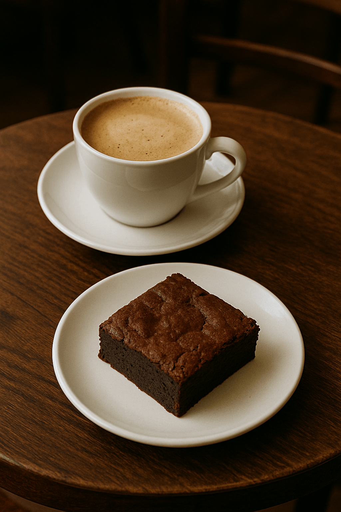
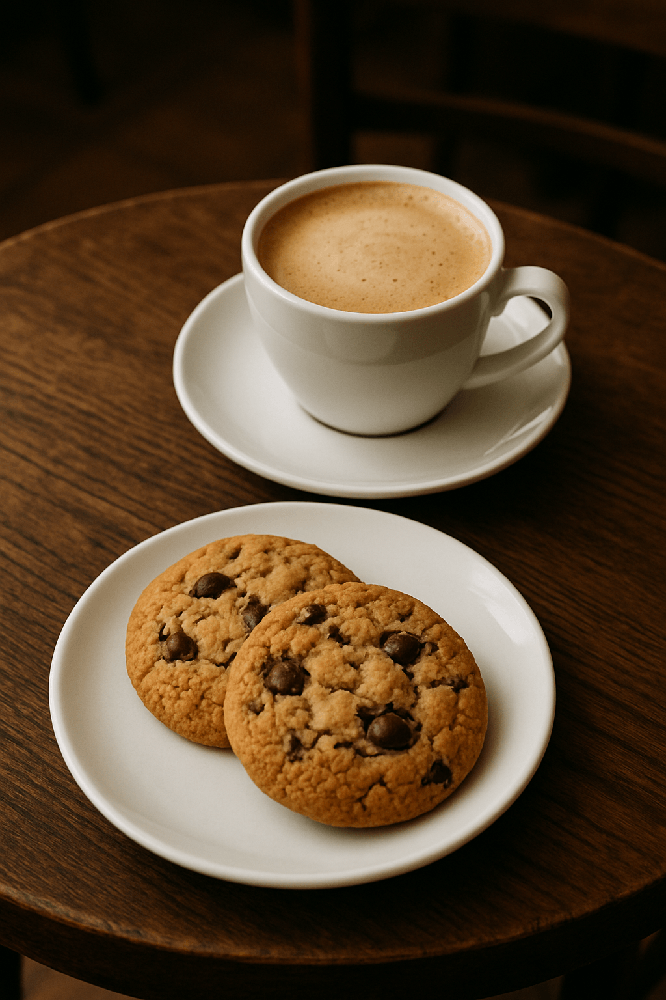
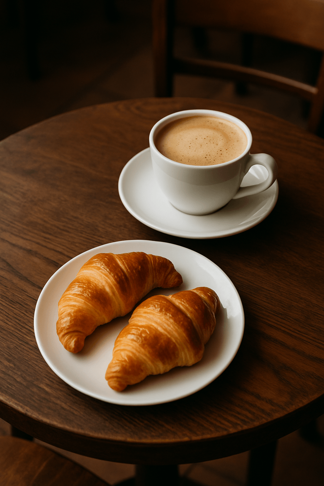
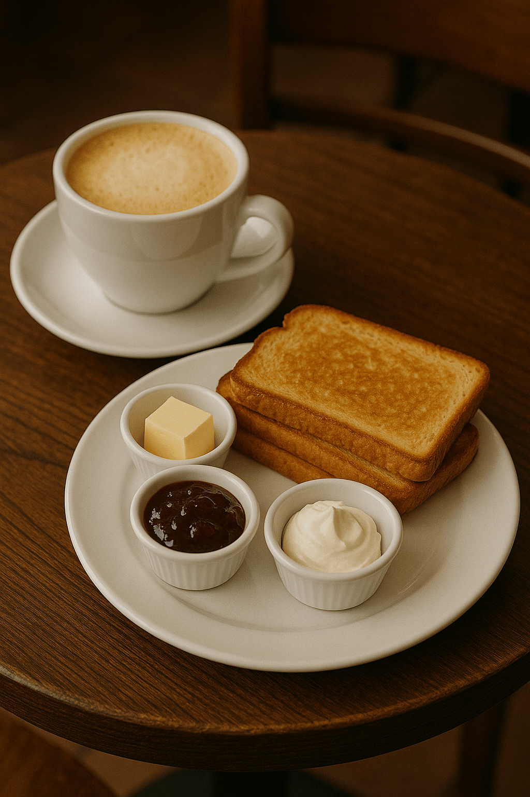
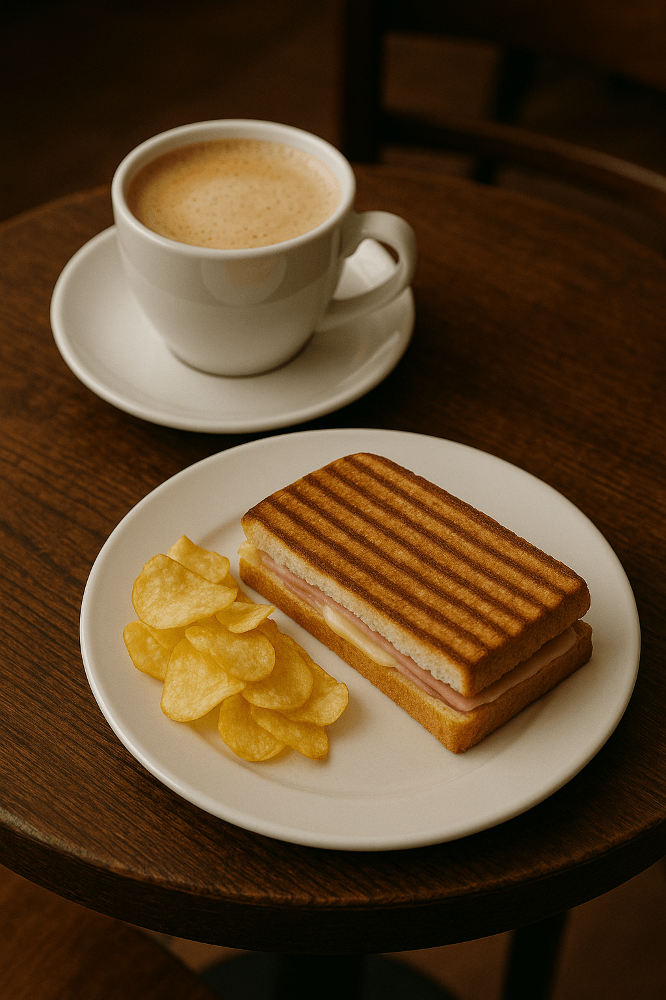

Café con Leche y Brownie

Café doble combinado con leche caliente y una capa de espuma. Se acompaña con una porción de brownie de chocolate artesanal, de textura húmeda y sabor intenso.
$10.000
Nuestra propuesta combina diferentes preparaciones de café con opciones dulces y saladas para acompañar cada momento del día. Desde clásicos de pastelería hasta alternativas más completas, cada combinación está pensada para disfrutar el café junto a sabores que complementan su preparación.

Café doble combinado con leche caliente y una capa de espuma. Se acompaña con una porción de brownie de chocolate artesanal, de textura húmeda y sabor intenso.
$10.000

Café doble preparado con leche caliente y espuma suave. Se acompaña con cookies artesanales de chocolate, con una textura ligeramente crocante por fuera y tierna en su interior.
$9.000

Café doble combinado con leche caliente y espuma. Se acompaña con medialunas de masa hojaldrada, de textura liviana y superficie dorada.
$7.500
Café doble preparado con leche caliente y espuma suave. Se acompaña con una porción de torta de chocolate, elaborada con una miga húmeda y cobertura de chocolate.
$15.000

Café doble combinado con leche caliente y espuma. Se acompaña con tostadas de pan artesanal, doradas y crocantes, ideales para acompañar con manteca, dulce de leche o mermelada.
$6.000

Café doble preparado con leche caliente y espuma suave. Se acompaña con un tostado de jamón y queso, elaborado con pan dorado, jamón cocido y queso fundido.
$12.000